Conheça um pouco mais sobre a localização dos seus amigos
Cada pessoa é um artista livre, chamado a transformar as condições, pensamentos e estruturas que moldam nossas vidas.
A cidade de TripleTen reuniu profissionais de diversos cantos do mundo. Hoje a Galeria de Arte TripleTen tem o orgulho de apresentar histórias e fotos de algumas das pessoas que dedicam seu tempo e esforço para fazer com que os futuros profissionais de tecnologia desta cidade se sintam em casa. Cada um de nós tem uma história única sobre o lugar de onde viemos. Sinta-se à vontade para adicionar sua própria história e uma obra de arte visual dedicada à sua cidade natal à nossa coleção. Não importa de onde você é, estamos felizes por você ser nosso vizinho.
 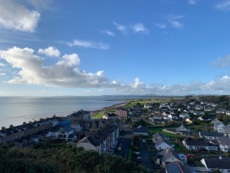
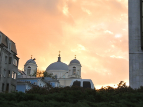
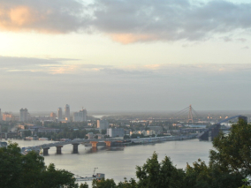
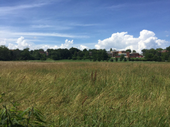
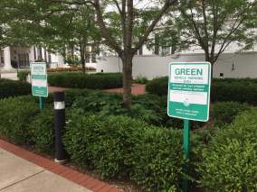
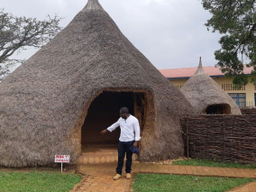
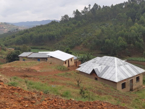
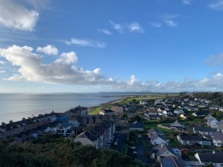
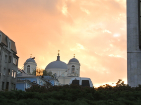
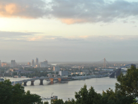
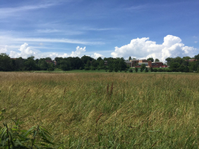
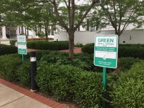
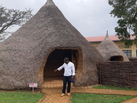
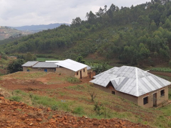
Kiev, Ucrânia
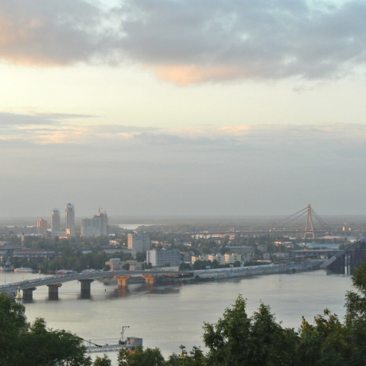ARTISTA
Kyev (ou Kiev), capital da Ucrânia, é uma grande cidade localizada às margens do rio Dnipro. É claro que ninguém em sã consciência nadaria no rio, a menos que tenha crescido lá, e nesse caso provavelmente já tentou em algum momento. Os verões são quentes aqui e os invernos são frios, mas o outono e a primavera são absolutamente incríveis.
A cidade em si é uma mistura de arquitetura pré-revolução, pós-guerra e soviética, toda ela salpicada de varandas modificadas. Se estiver na margem direita do Dnipro, a paisagem é difícil de percorrer para quem anda de bicicleta e quem usa salto. A margem esquerda é considerada muito menos interessante e prestigiosa, mesmo por pessoas que vivem na periferia da margem direita.
Criccieth, País de Gales

ARTISTAS
A ruína medieval do Castelo de Cricieth tem vista para a cidade abaixo de uma rocha que se projeta para o mar. Acredita-se que tenha sido construído por Llewelyn, o Grande, no século XIII. Cerca de 900 anos depois, a auto-intitulada Pérola de Gales nas margens de Snowdonia tornou-se um destino turístico popular durante os meses de verão.
A uma curta caminhada da estrada do castelo, você pode desfrutar do melhor sorvete do mundo no Cadwalader's, cujo ingrediente secreto, segundo rumores, são algas marinhas de origem local. Outra reivindicação à fama é o fato de que Criccieth ganhou o prêmio Wales in Bloom por cinco anos consecutivos por suas espetaculares exibições florais pela cidade. Foi também a casa de David Lloyd George, o único galês a ocupar o cargo de primeiro-ministro do Reino Unido.
Berea, EUA

ARTISTA
Berea é uma pequena cidade localizada na parte central do Kentucky. A cidade é cercada por belas florestas e campos. É conhecida como a capital do artesanato do estado, e os visitantes encontrarão muitas oportunidades de compras: lojas com bijuterias artesanais, velas, artigos de madeira, galerias, ateliês de vidro e muito mais. A cidade realiza um festival anual que celebra o "pão de colher", um prato local feito com pão de milho e servido com uma colher de pau.
No entanto, provavelmente é mais conhecido pela faculdade local. O Berea College foi fundado em 1855 e foi o primeiro colégio no sul a ser racialmente integrado, bem como o primeiro a ser misto. De forma um tanto singular, não cobra mensalidades - todo aluno recebe uma bolsa de estudos integral.
Muramvya, Burundi
ARTISTA
Muramvya é uma das 18 províncias de Burundi. Na era do reino, Muramvya era a capital real e em 2007, por causa de sua paisagem cultural e natural, foi adicionada à Lista Provisória do Patrimônio Mundial da UNESCO. Está localizada no centro de Burundi, entre as capitais políticas e econômicas do país.
O clima é bastante frio à noite, mas durante o dia, você pensaria que está no céu. A 2.665 metros (8.743 pés) acima do nível do mar, o Monte Teza é um dos lugares mais frios da província. Mas essa brisa fresca permite uma das maiores plantações de chá e café do país, que representam a maior parte das exportações do Burundi.
O Parque Nacional de Kibira, uma das maiores reservas de vida selvagem para macacos, se sobrepõe a quatro províncias, incluindo Muramvya. Este Parque Nacional encontra-se no ápice das belas montanhas do Congo-Nile Divide, variando entre 1.550 e 2.660 metros de altitude. Está repleta de uma bela vegetação e fonte para os vários rios e riachos que fornecem água em todo o país.
Iwata-shi, Japan
ARTISTA
Iwata-shi é uma cidade japonesa localizada a oeste da província de Shizuoka. Em Janeiro de 2018 a cidade tinha uma população estimada em 166.729 habitantes e uma densidade populacional de 1 1020 h/km². Tem uma área total de 163.45 km². Recebeu o estatuto de cidade a 1 de Abril de 1948. Segundo dados de 1 de Fevereiro de 2007 a cidade de Iwata tem 176 097 habitantes, sendo que 4.158 são brasileiros.
A Yamaha Motors tem sua montadora de motocicletad em Iwata, também a Suzuki monta sua comionetes. Iwata é a cidade sede do time de futebol Júbilo Iwata. Um dos jogadores que marcaram a história do time foi Dunga. Presume-se os ancestrais do fundador da Toyota e também inventor da máquina automática de tecelagem Sakichi Toyoda tenha nascido na vila de Toyoda na atual Iwata.